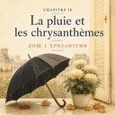
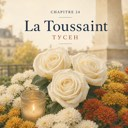
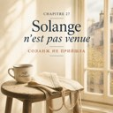
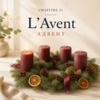

<!doctype html>
<html lang="uk">
<meta charset="utf-8">
<meta name="viewport" content="width=device-width,initial-scale=1,viewport-fit=cover">
<meta name="color-scheme" content="light dark">
<title>Le Jardin d'Émile — глави</title>
<link rel="stylesheet" href="reader.css?v=a99a7b50">
<header><div class="wrap">
  <div class="top"><div>
    <h1>Le Jardin d'Émile</h1>
    <div class="sub">французька з перекладом і озвученням</div>
  </div></div>
</div></header>
<main><div class="wrap">
  <ul class="chlist"><li><a href="ch01.html" data-ch="1" data-dur="160.48"><span class="num">01</span><span class="tt">Paris au mois d'août<span class="u">Париж у серпні</span></span><span class="mark"></span><span class="meta">2:40</span></a></li><li><a href="ch02.html" data-ch="2" data-dur="116.88"><span class="num">02</span><span class="tt">Serguiy<span class="u">Сергій</span></span><span class="mark"></span><span class="meta">1:56</span></a></li><li><a href="ch03.html" data-ch="3" data-dur="133.04"><span class="num">03</span><span class="tt">L'inscription<span class="u">Запис</span></span><span class="mark"></span><span class="meta">2:13</span></a></li><li><a href="ch04.html" data-ch="4" data-dur="142.64"><span class="num">04</span><span class="tt">Le premier cours<span class="u">Перший урок</span></span><span class="mark"></span><span class="meta">2:22</span></a></li><li><a href="ch05.html" data-ch="5" data-dur="148.4"><span class="num">05</span><span class="tt">Chercher du travail<span class="u">Пошук роботи</span></span><span class="mark"></span><span class="meta">2:28</span></a></li><li><a href="ch06.html" data-ch="6" data-dur="151.36"><span class="num">06</span><span class="tt">Le premier entretien<span class="u">Перша співбесіда</span></span><span class="mark"></span><span class="meta">2:31</span></a></li><li><a href="ch07.html" data-ch="7" data-dur="146.16"><span class="num">07</span><span class="tt">Oksana dit la vérité<span class="u">Оксана каже правду</span></span><span class="mark"></span><span class="meta">2:26</span></a></li><li><a href="ch08.html" data-ch="8" data-dur="150.88"><span class="num">08</span><span class="tt">Le cours : les questions<span class="u">Урок: питання</span></span><span class="mark"></span><span class="meta">2:30</span></a></li><li><a href="ch09.html" data-ch="9" data-dur="150.64"><span class="num">09</span><span class="tt">La vitrine de la rue de Bretagne<span class="u">Вітрина на рю де Бретань</span></span><span class="mark"></span><span class="meta">2:30</span></a></li><li><a href="ch10.html" data-ch="10" data-dur="188.96"><span class="num">10</span><span class="tt">Le premier jour<span class="u">Перший день</span></span><span class="mark"></span><span class="meta">3:08</span></a></li><li><a href="ch11.html" data-ch="11" data-dur="190.48"><span class="num">11</span><span class="tt">La rentrée<span class="u">Після серпня</span></span><span class="mark"></span><span class="meta">3:10</span></a></li><li><a href="ch12.html" data-ch="12" data-dur="210.24"><span class="num">12</span><span class="tt">Le premier bouquet de la semaine<span class="u">Перший букет тижня</span></span><span class="mark"></span><span class="meta">3:30</span></a></li><li><a href="ch13.html" data-ch="13" data-dur="200.96"><span class="num">13</span><span class="tt">Le monsieur du jeudi<span class="u">Пан із четверга</span></span><span class="mark"></span><span class="meta">3:20</span></a></li><li><a href="ch14.html" data-ch="14" data-dur="204.8"><span class="num">14</span><span class="tt">Le café d'en face<span class="u">Кав'ярня навпроти</span></span><span class="mark"></span><span class="meta">3:24</span></a></li><li><a href="ch15.html" data-ch="15" data-dur="168.4"><span class="num">15</span><span class="tt">Une cliente pressée<span class="u">Клієнтка, яка поспішає</span></span><span class="mark"></span><span class="meta">2:48</span></a></li><li><a href="ch16.html" data-ch="16" data-dur="188.96"><span class="num">16</span><span class="tt">Le lundi, on danse<span class="u">У понеділок танцюють</span></span><span class="mark"></span><span class="meta">3:08</span></a></li><li><a href="ch17.html" data-ch="17" data-dur="270.32"><span class="num">17</span><span class="tt">Le cours : hier, j'ai fait<span class="u">Урок: учора я зробила</span></span><span class="mark"></span><span class="meta">4:30</span></a></li><li><a href="ch18.html" data-ch="18" data-dur="182.24"><span class="num">18</span><span class="tt">La pluie et les chrysanthèmes<span class="u">Дощ і хризантеми</span></span><span class="mark"></span><span class="meta">3:02</span></a></li><li><a href="ch19.html" data-ch="19" data-dur="189.76"><span class="num">19</span><span class="tt">Un client qui ne sait pas<span class="u">Клієнт, який не знає</span></span><span class="mark"></span><span class="meta">3:09</span></a></li><li><a href="ch20.html" data-ch="20" data-dur="218.8"><span class="num">20</span><span class="tt">Le client anglais<span class="u">Клієнт-англієць</span></span><span class="mark"></span><span class="meta">3:38</span></a></li><li><a href="ch21.html" data-ch="21" data-dur="236.64"><span class="num">21</span><span class="tt">Le téléphone<span class="u">Телефон</span></span><span class="mark"></span><span class="meta">3:56</span></a></li><li><a href="ch22.html" data-ch="22" data-dur="129.92"><span class="num">22</span><span class="tt">Trois euros<span class="u">Три євро</span></span><span class="mark"></span><span class="meta">2:09</span></a></li><li><a href="ch23.html" data-ch="23" data-dur="176.32"><span class="num">23</span><span class="tt">Serguiy et la méthode<span class="u">Серґій і метод</span></span><span class="mark"></span><span class="meta">2:56</span></a></li><li><a href="ch24.html" data-ch="24" data-dur="222.56"><span class="num">24</span><span class="tt">La Toussaint<span class="u">Тусен</span></span><span class="mark"></span><span class="meta">3:42</span></a></li><li><a href="ch25.html" data-ch="25" data-dur="242.24"><span class="num">25</span><span class="tt">Une couronne<span class="u">Вінок</span></span><span class="mark"></span><span class="meta">4:02</span></a></li><li><a href="ch26.html" data-ch="26" data-dur="261.04"><span class="num">26</span><span class="tt">L'horloger d'à côté<span class="u">Годинникар із сусідніх дверей</span></span><span class="mark"></span><span class="meta">4:21</span></a></li><li><a href="ch27.html" data-ch="27" data-dur="222.56"><span class="num">27</span><span class="tt">Solange n'est pas venue<span class="u">Соланж не прийшла</span></span><span class="mark"></span><span class="meta">3:42</span></a></li><li><a href="ch28.html" data-ch="28" data-dur="195.36"><span class="num">28</span><span class="tt">Monsieur Morel n'est pas content<span class="u">Мсьє Морель незадоволений</span></span><span class="mark"></span><span class="meta">3:15</span></a></li><li><a href="ch29.html" data-ch="29" data-dur="222.24"><span class="num">29</span><span class="tt">Le cours : c'était comment ?<span class="u">Курс: а як воно було?</span></span><span class="mark"></span><span class="meta">3:42</span></a></li><li><a href="ch30.html" data-ch="30" data-dur="218.56"><span class="num">30</span><span class="tt">Rungis, quatre heures du matin<span class="u">Ранжис, четверта ранку</span></span><span class="mark"></span><span class="meta">3:38</span></a></li><li><a href="ch31.html" data-ch="31" data-dur="0"><span class="num">31</span><span class="tt">L'Avent<span class="u">Адвент</span></span><span class="mark"></span><span class="meta">текст</span></a></li><li><a href="ch32.html" data-ch="32" data-dur="0"><span class="num">32</span><span class="tt">La commande de l'agence<span class="u">Замовлення від агенції</span></span><span class="mark"></span><span class="meta">текст</span></a></li><li><a href="ch33.html" data-ch="33" data-dur="0"><span class="num">33</span><span class="tt">Le 24 décembre<span class="u">Двадцять четверте грудня</span></span><span class="mark"></span><span class="meta">текст</span></a></li><li><a href="ch34.html" data-ch="34" data-dur="0"><span class="num">34</span><span class="tt">Kyiv<span class="u">Київ</span></span><span class="mark"></span><span class="meta">текст</span></a></li><li><a href="ch35.html" data-ch="35" data-dur="0"><span class="num">35</span><span class="tt">Le retour<span class="u">Повернення</span></span><span class="mark"></span><span class="meta">текст</span></a></li><li><a href="ch36.html" data-ch="36" data-dur="0"><span class="num">36</span><span class="tt">Le nouveau au cours de danse<span class="u">Новенький на танцях</span></span><span class="mark"></span><span class="meta">текст</span></a></li><li><a href="ch37.html" data-ch="37" data-dur="0"><span class="num">37</span><span class="tt">Serguiy à Cracovie<span class="u">Серґій у Кракові</span></span><span class="mark"></span><span class="meta">текст</span></a></li><li><a href="ch38.html" data-ch="38" data-dur="0"><span class="num">38</span><span class="tt">L'abonnement<span class="u">Підписка</span></span><span class="mark"></span><span class="meta">текст</span></a></li><li><a href="ch39.html" data-ch="39" data-dur="0"><span class="num">39</span><span class="tt">Émile<span class="u">Еміль</span></span><span class="mark"></span><span class="meta">текст</span></a></li><li><a href="ch40.html" data-ch="40" data-dur="0"><span class="num">40</span><span class="tt">Avant la Saint-Valentin<span class="u">Перед Днем святого Валентина</span></span><span class="mark"></span><span class="meta">текст</span></a></li></ul>
</div></main>
<script>
(function(){
document.body.classList.add('js');
[].forEach.call(document.querySelectorAll('[data-ch]'), function(el){
  try{
    var v = localStorage.getItem('lf-ch' + el.dataset.ch);
    if(!v) return;
    var t = JSON.parse(v).t || 0;
    var d = +el.dataset.dur || 0;
    if(t < 5) return;
    var m = el.querySelector('.mark');
    m.textContent = (d && t > d - 10) ? '✓' : Math.round(t / d * 100) + '%';
  }catch(e){}
});
})();
</script>
</html>
